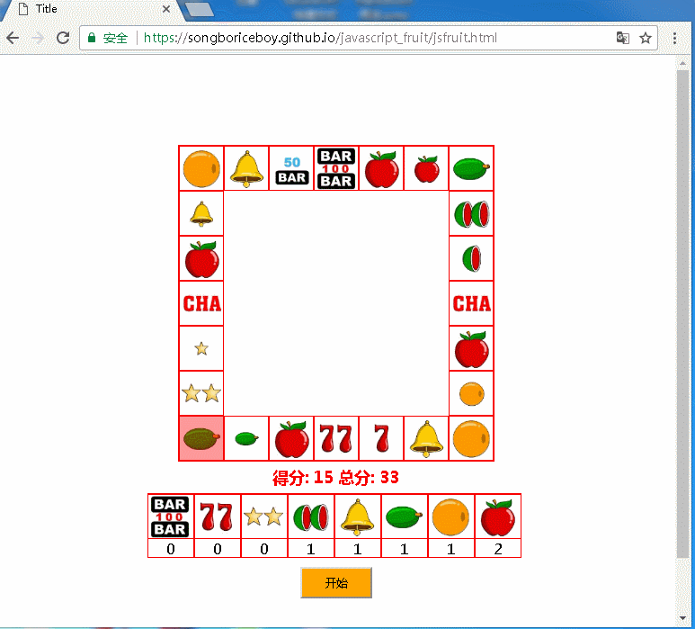
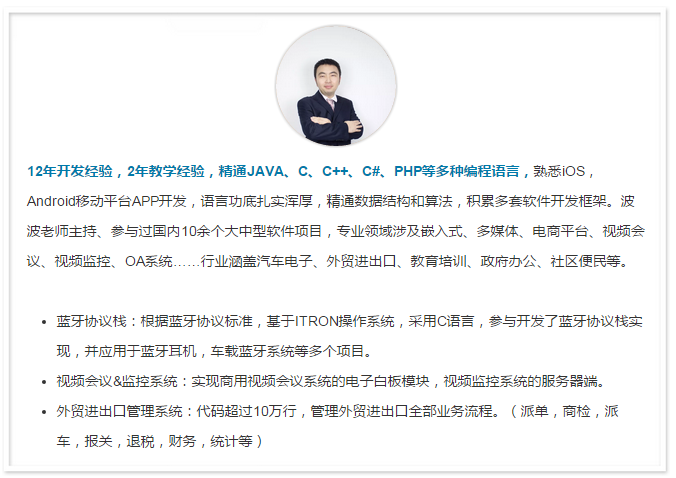

直播课堂 | 6堂实战课，快速提升Web前端技术
2017-12-13
嘿，艾瑞波地
东软睿道线上IT课堂将正式开启
未来我们会通过线上的方式给您带来一堂堂实战课程
你懂的，编程最重要的就是动手啊
对于已经在东软睿道学习的你
可以通过实战课来巩固平时所学的知识，融会贯通
对于想开启IT大门、进入编程世界的你
可以通过实战来看懂软件究竟能改变什么
话不多说，第一堂课走你~
嘿！
刚刚入门 HTML、CSS、JavaScript、Web前端的童鞋们
你们有没有遇到这些问题：
学习了大量的CSS，JS等前端知识，却依然分不清主次
面对稍微复杂一些的页面效果，更是没有思路，无从下手
对于 HTML、CSS、JavaScript这【前端三剑客】
他们在页面开发中到底如何分工
面对所学的前端知识完全无法融会贯通、只会生搬硬套……
都在这套《JS水果老虎机》的实战课程中
这个项目取材于经典的街机游戏
可谓称得上麻雀虽小，五脏俱全
这个项目我们将分6次课来进行讲解，其中包含众多前端技术
CSS技术方面包含了经典的盒子模型，浮动布局，元素定位
以及CSS3新增选择器的运用
JavaScript技术中的定时器、随机数
DOM操作、事件处理技术
ES6中的新增的Map集合和模板字符串等新颖技术
相信同学们在观看完这一系列视频课程后，会对目前所学的前端知识融会贯通，对于复杂一些的页面效果也不会再束手无策。

